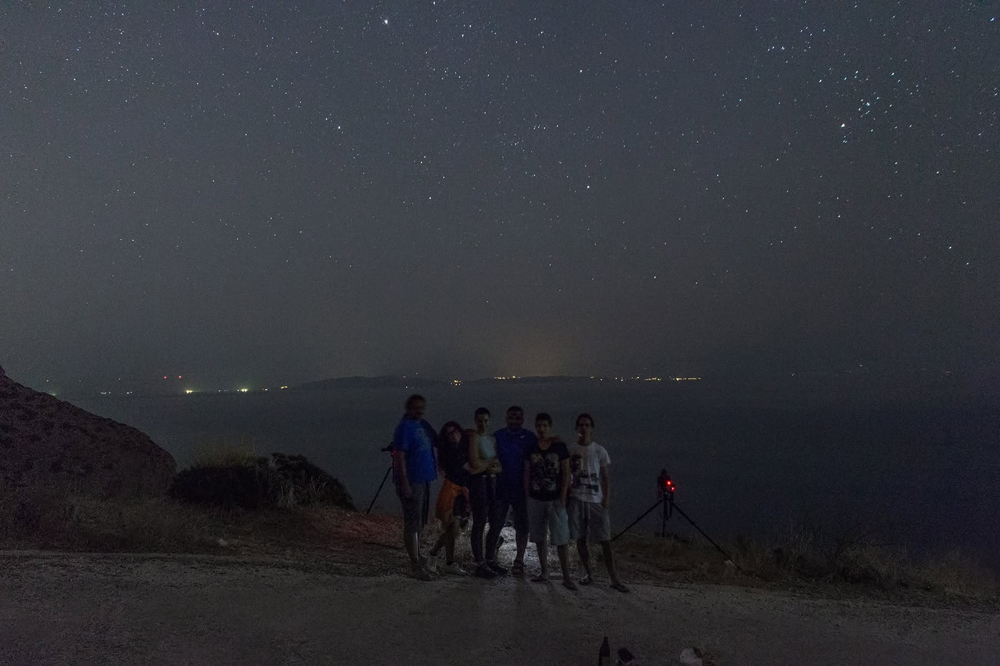
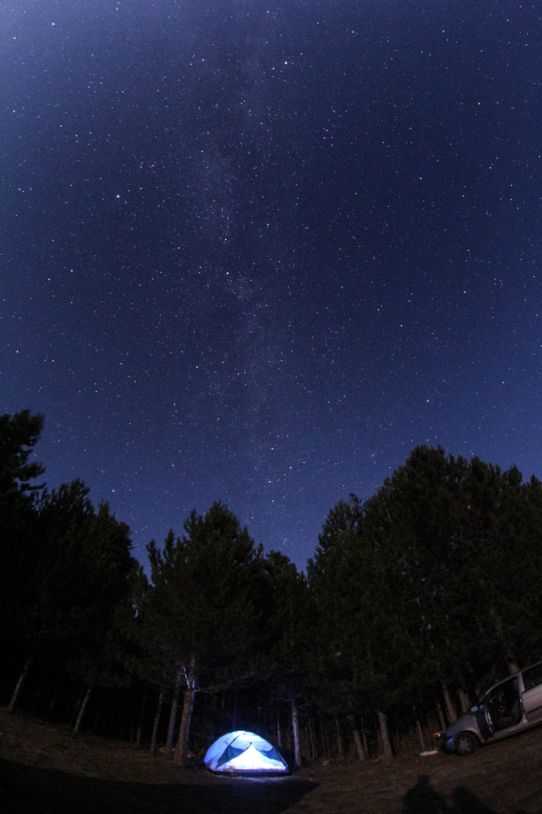
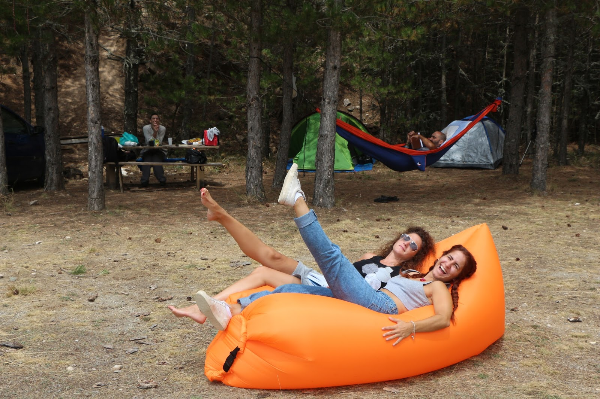

Astronomy Outreach & Stargazing
My astronomy activities during this period extended beyond a single organisation. I participated in public observing sessions, educational activities and stargazing events in different parts of Greece, including activities with the Astronomy Society of Patras “Orion”, meteor-shower observing near Athens and astronomy outings on Mount Parnon.
Astronomy Society of Patras “Orion”
Public observing sessions and educational activities promoting astronomy, scientific literacy and engagement with the night sky.

Perseids Observation at Kaki Thalassa
Joined a group observation of the Perseids meteor shower at Kaki Thalassa, with Evia visible across the water.

Parnonas Astronomy Outing
Joined an astronomy outing on Mount Parnon that included night-sky observing, astrophotography, bright meteor observations and sky-mapping activities.


Photo credits: Antonis Farmakopoulos and Nikos Tremoulis.